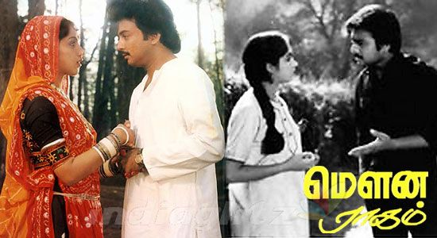

Mouna Ragam (1986) — A Story of Love, Loss & New Beginnings

Mouna Ragam is a 1986 Tamil romantic drama written and directed by Mani Ratnam. Mohan plays Chandrakumar, Revathi plays Divya, and Karthik appears as Manohar.
Divya enters an arranged marriage while carrying the grief of a past relationship. As she and Chandrakumar learn about one another, the story explores loss, choice, and the possibility of building a new relationship without denying the past.
Ilaiyaraaja composed the film's music, with memorable songs including "Mandram Vandha Thendralukku" and "Nilaave Vaa." The film received the National Film Award for Best Feature Film in Tamil and became a major success.
Its intimate performances, restrained visual style, and music made Mouna Ragam an enduring work in Mani Ratnam's filmography.
Source: Film overview and credits.